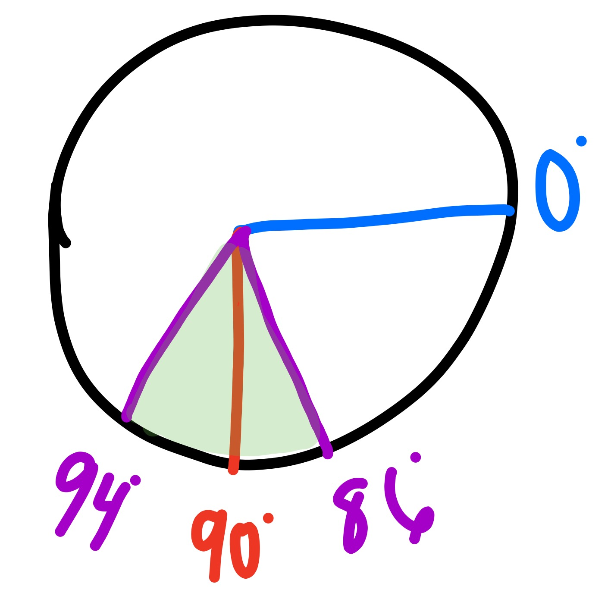
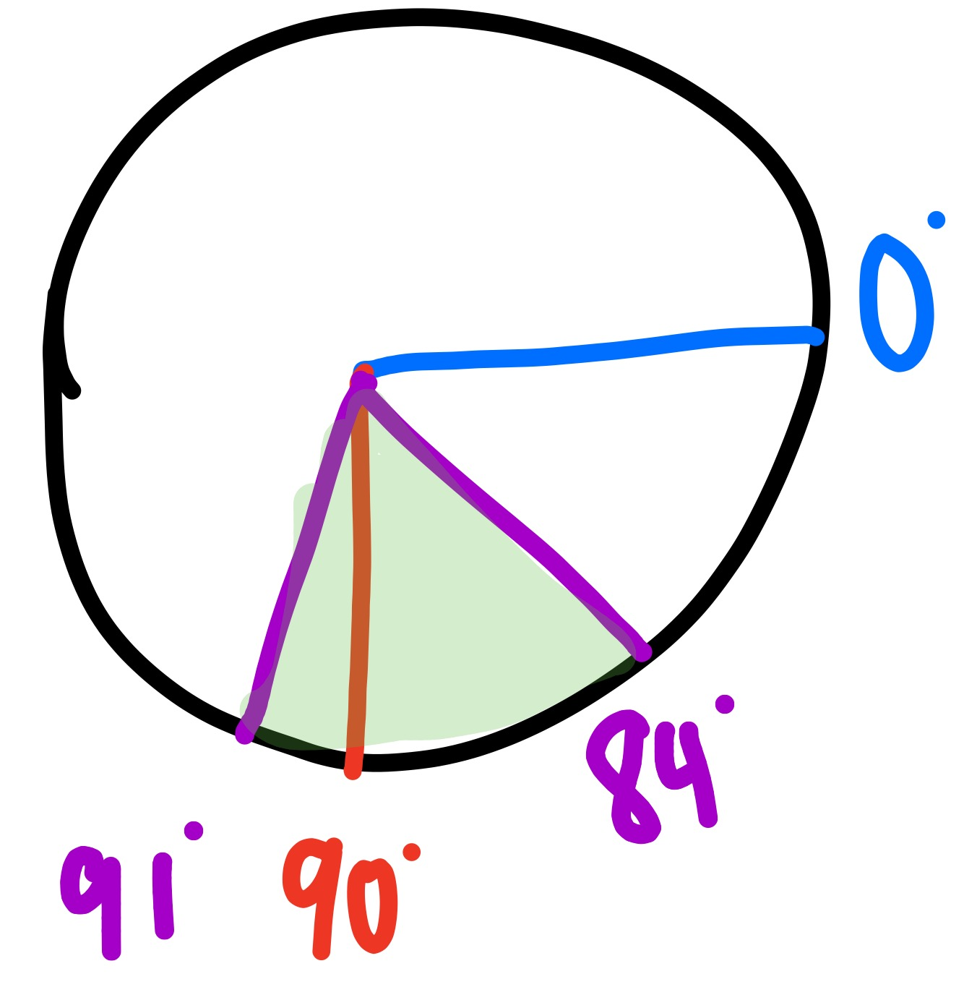

gyro sensor

goal
this project covers how to use a proportional controller in conjuction with a gyro sensor to do controlled rotations to arbitrary angles
setting up the robot
a simple tank drive robot will be needed for this project. the robot will also need a gyro sensor mounted in the proper orientation
mounting the gyro
because the gyro has only one DoF, it must be mounted in a deliberate way. the plane of the arrows on the top of the sensor should be parallel to the plane of motion we want to measure (parallel to the ground in this case)
programming
abstract
we will use a proportional controller for this project. this means we'll slow down as we get closer to our target angle.
the function is: output=error*kP
our error in this case is starting angle subtracted from desired angle
kP is the proportional constant. once we have the software working, we'll need to tune this constant
output is the commanded motor power level
deadband
a deadband is the allowable error for our control loop. deadband helps our robot converge more quickly on the goal.
deadband should be balanced with speed, which in this context means how quickly our robot converges on the target angle.
if speed is favored and we don't need to be very precise, we can significantly increase the proportional constant and set a large deadband.

the picture above illustrates a deadband of +/- 4deg for a goal of 90deg
0deg is the starting angle
the +/- 4deg deadband means the robot will stop anywhere in between 94deg and 86deg (the area highlighted in green.
note: the deadband doesn't have to be symmetric. for example, you could have a deadband of +1deg and -6deg.

english
- read the current output angle
- calculate the error
- check if the error is within the range of the deadband
- if it is: stop. if not, output the error multiplied by the proportional constant to the motors
dragons
winter is coming
tips
- ensure the gyro is in angle mode
notes
sometimes the gyro will drift a lot and continually increment with no motion. if this happens, unplug the sensor from the brick while the brick is on and plug it back in.
it is best when using the gyro to leave the robot still while it starts up
the gyro block must be downloaded from the ev3 downloads page
extra resources
https://www.youtube.com/watch?v=2vbNTyLkhHY
https://www.youtube.com/watch?v=7V16AEW3GG4